Docker Infrastructure Project
Self-hosted infrastructure using Docker Compose, Nginx, Apache, MariaDB, Grafana, Prometheus, and WireGuard VPN.
Project Overview
This project demonstrates a containerized infrastructure environment designed to host public web services while keeping administrative and monitoring tools restricted behind VPN/IP-based access controls.
Architecture Diagram
Internet
|
DNS (Bind 9)
|
Nginx Reverse Proxy
|
+-------------------------+
| Public Services |
| - Apache Resume Site |
| - Flask Tracker App |
+-------------------------+
|
Docker Network
|
MariaDB
WireGuard VPN
|
Admin Access
|
+-------------------------+
| Restricted Services |
| - Grafana |
| - Prometheus |
| - Admin Pages |
+-------------------------+
Docker & Docker Compose Infrastructure
Installed Docker and Docker Compose on an Ubuntu VPS and created a centralized infrastructure repository to manage application containers, configuration files, SSL certificates, and persistent storage.
- Installed Docker Engine and Docker Compose
- Created custom Docker network for service communication
- Configured Docker volumes for persistent storage
- Implemented restart policies for service resiliency
- Managed services using a centralized docker-compose.yml
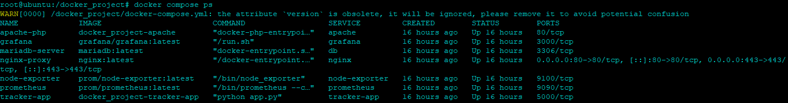
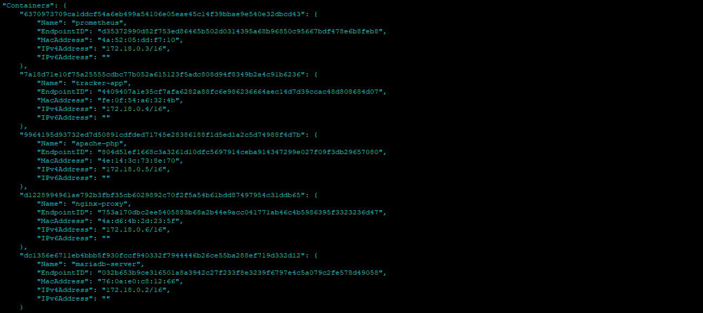
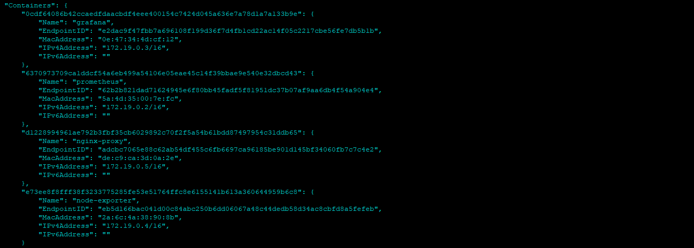
Apache Resume Website & MariaDB
Deployed a PHP-based resume website within a Docker container and connected it to a MariaDB database using Docker internal networking.
- Configured Apache virtual hosts
- Connected PHP application to MariaDB
- Implemented database queries for dynamic content
- Configured persistent database storage
- Restricted database access to the Docker network
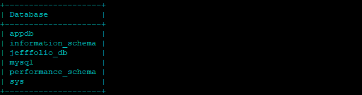
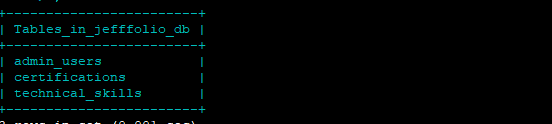
Flask Calorie Lookup Application
Developed and deployed a Python Flask application that retrieves nutritional information through API integrations and serves data through a web interface.
- Built custom Flask container
- Configured internal Docker networking
- Integrated third-party nutrition APIs
- Implemented search and autocomplete functionality
- Published application through Nginx reverse proxy
Nginx Reverse Proxy & SSL
Configured Nginx as the public-facing reverse proxy responsible for HTTPS termination and routing requests to internal Docker services.
- Configured virtual hosts for multiple subdomains
- Implemented SSL/TLS encryption
- Configured HTTP to HTTPS redirects
- Created upstream definitions for Docker services
- Managed public access to internal applications
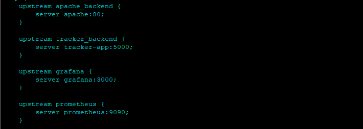
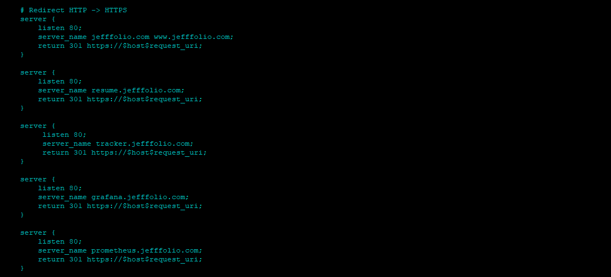
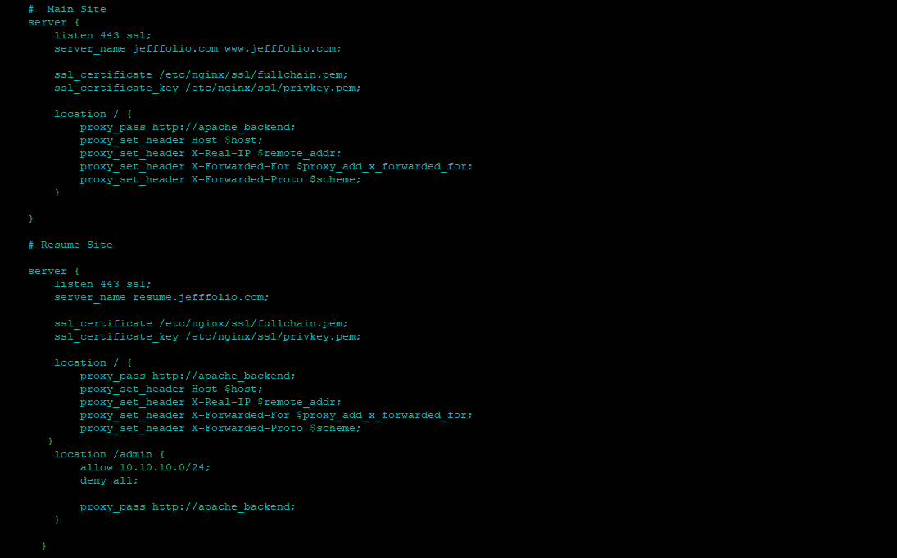
Monitoring & Administration Stack
Implemented monitoring, administration, and backup services to provide visibility into system performance and improve operational reliability.
- Deployed Grafana for dashboard visualization
- Configured Prometheus metric collection
- Installed Node Exporter for system metrics
- Developed an administrative portal for managing website content and database records
- Restricted monitoring services and adminsitrative services through IP allowlists
- Implemented Acronis backup procedures and recovery procedures
- Configured WireGuard VPN for secure administrative access
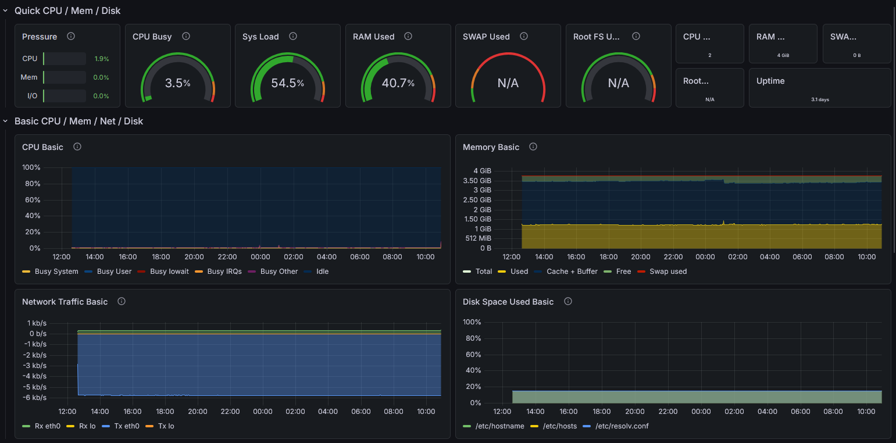
https://grafana.jefffolio.com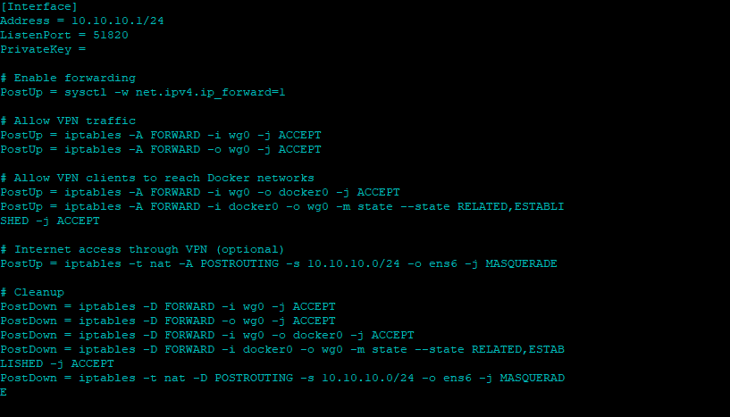
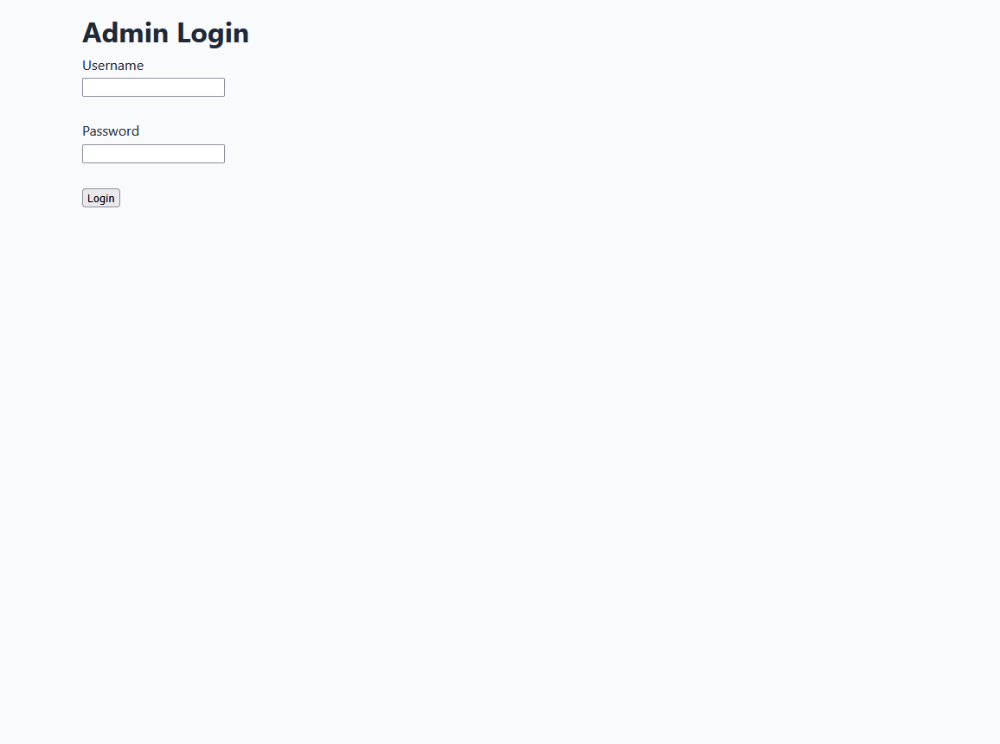
https://resume.jefffolio.com/admin/login.phpTechnologies Used
- Ubuntu Server
- Docker
- Docker Compose
- Nginx Reverse Proxy
- Apache
- MariaDB
- Grafana
- Prometheus
- WireGuard VPN
Security Design
- Public traffic is routed through Nginx reverse proxy.
- Grafana and Prometheus are restricted from public access.
- Administrative access is handled through WireGuard VPN.
- MariaDB is only reachable through the internal Docker network.
- HTTPS is used for public-facing services.